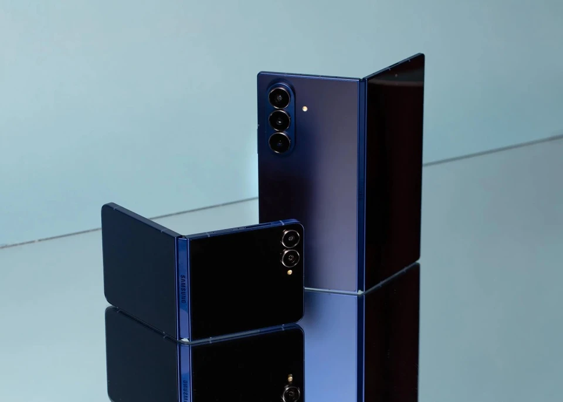

Điện thoại gập Samsung dùng được mấy năm trước khi hỏng?

Điện thoại gập đã đi một chặng đường dài kể từ những thế hệ đầu tiên xuất hiện trên thị trường. Các mẫu máy mới như Samsung Galaxy Z Fold, Google Pixel Fold hay Honor Magic V đều sở hữu thiết kế mỏng hơn, bản lề chắc chắn hơn và khả năng chống nước, chống bụi ngày càng hoàn thiện.
Tuy nhiên, một câu hỏi vẫn thường xuyên xuất hiện trên các diễn đàn công nghệ: điện thoại gập thực sự có thể sử dụng được bao lâu? Nếu với smartphone truyền thống, người dùng có thể kỳ vọng vòng đời 4-5 năm nhờ phần cứng bền bỉ và thời gian hỗ trợ phần mềm kéo dài, câu trả lời với điện thoại gập lại phức tạp hơn.
Nguyên nhân nằm ở chính thiết kế của thiết bị.
Không giống điện thoại thông thường, smartphone gập sở hữu nhiều bộ phận chuyển động như bản lề và màn hình có khả năng uốn cong liên tục. Trong đó, màn hình bên trong được xem là thành phần dễ bị ảnh hưởng nhất theo thời gian.
Các nhà sản xuất đã đầu tư đáng kể để cải thiện độ bền. Samsung cho biết Galaxy Z Fold 7 có thể chịu được tới 500.000 lần gập mở, gấp 2,5 lần so với một số thế hệ trước. Nhiều mẫu máy mới cũng được trang bị khung kim loại cứng hơn, khả năng chống bụi và chống nước tốt hơn.
Dù vậy, trải nghiệm của người dùng cho thấy các vấn đề đặc trưng của điện thoại gập vẫn có thể xuất hiện sau một thời gian sử dụng.
Trên Reddit, nhiều chủ sở hữu Galaxy Z Fold đời cũ cho biết lớp bảo vệ màn hình bên trong bắt đầu bong mép sau khoảng 12-18 tháng. Một số trường hợp xuất hiện các vết nứt nhỏ dọc theo nếp gấp, trong khi những người khác gặp tình trạng màn hình không còn mở phẳng hoàn toàn.
Tuy nhiên, không phải mọi trải nghiệm đều tiêu cực. Nhiều người dùng Galaxy Z Fold 5 cho biết thiết bị vẫn hoạt động ổn định sau gần hai năm sử dụng. Một số trường hợp còn ghi nhận máy sống sót sau các cú rơi mạnh hoặc môi trường làm việc khắc nghiệt mà không gặp hư hỏng nghiêm trọng.
Một khảo sát cộng đồng được thực hiện trên Reddit năm 2025 đối với các dòng Galaxy Z Fold cho thấy Samsung đã cải thiện đáng kể độ bền qua từng thế hệ. Các mẫu Fold 5 và Fold 6 ghi nhận ít trường hợp nứt màn hình, bong lớp bảo vệ hoặc xuất hiện vết nứt vi mô hơn so với Fold 3 và Fold 4.
Dữ liệu khảo sát cũng cho thấy các vấn đề nghiêm trọng nhất thường xuất hiện sau năm đầu tiên và đạt đỉnh vào khoảng năm thứ hai sử dụng.
Điều đó không đồng nghĩa điện thoại gập chỉ dùng được hai năm. Trên thực tế, nhiều thiết bị vẫn có thể hoạt động lâu hơn nếu được bảo quản tốt. Tuy nhiên, đây là khoảng thời gian mà người dùng có nhiều khả năng phải thay lớp bảo vệ màn hình hoặc thực hiện các sửa chữa liên quan đến màn hình gập.